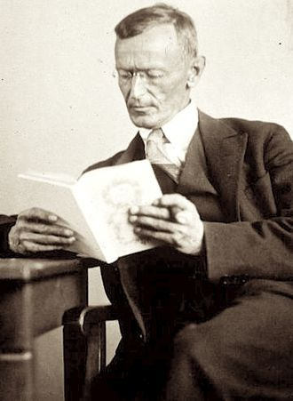
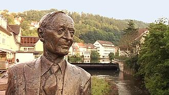

Tá otário, faz outro
Estou fazendo um site sobre um pouco da vida e da obra de Hermann Hesse, um dos meus escritores favoritos, com intuito de por em prática o que eu aprendi e o que eu estiver aprendendo sobre HTML. Essas são minhas palavras. Você pode entrar em contato comigo pelo GitHub. Explorem um pouco o site, conheçam um pouco desse senhor fabuloso, e espero que gostem do que fiz. (Eu também aceito feedbacks). Obrigado! :)
Nascido em uma família muito religiosa, filho de pais missionários protestantes (pietistas, como é típico da Suábia) que pregaram o cristianismo na Índia. Estudou no seminário de Maulbron em 1891, mas não seguiu a carreira de pastor, como era a vontade de seus pais. Embora fosse um estudante modelo, ele foi incapaz de se adaptar e saiu menos de um ano depois. Como ele explicaria mais tarde:
Eu era um bom aprendiz, bom em latim, apesar de justo em grego, mas não era um rapaz muito administrável e foi assim com dificuldade que me enquadrei na educação pietista que visava subjugar e quebrar a personalidade individual.
Tendo recusado a religião cristã, ainda adolescente, rompeu com a família e emigrou para a Suíça, em 1912, trabalhando como livreiro e operário. Acumula, então, uma sólida cultura autodidata e resolve dedicar-se à literatura.
Hesse publicou o seu primeiro livro, uma coleção de poemas, em 1899. Permaneceu no ramo de livrarias até 1904, quando se tornou escritor "freelancer" e publicou o seu primeiro romance, Peter Camenzind, sobre um escritor falido. O romance foi um sucesso. Hesse retornou ao tema da busca interna e externa de um artista em Gertrud (1910) e Rosshalde (1914). Uma visita à Índia, nesses anos, foi mais tarde refletida em Siddhartha (1922), um romance poético, ambientado na Índia, na época do Buda, sobre a busca pela iluminação.
Travou contacto com a espiritualidade oriental, a partir de uma viagem à Índia, em 1911, e com a psicologia analítica, por meio de um discípulo de Carl Gustav Jung, em decorrência de uma crise emocional causada pela eclosão da Primeira Guerra Mundial. Estas duas influências seriam decisivas no posterior desenvolvimento da sua obra.
Em 1946, recebeu o Prêmio Goethe e, passados alguns meses, o Nobel de Literatura "por seus escritos inspirados que, enquanto crescem em audácia e penetração, exemplificam os ideais humanitários clássicos e as altas qualidades de estilo".
Faleceu em 9 de Agosto de 1962 e foi sepultado no cemitério de San Abbondio em Montagnola, perto de Lugano, onde Hugo Ball também foi enterrado.
Hesse foi um autor popular e influente no mundo de língua alemã. A fama mundial só veio mais tarde. Seu primeiro grande romance, Peter Camenzind, foi recebido com entusiasmo por jovens alemães que desejavam um modo de vida diferente e mais "natural" numa época de grande progresso econômico e tecnológico no país. Demian teve uma influência forte e duradoura sobre a geração que voltou da Primeira Guerra Mundial para casa. Similarmente, O Jogo das Contas de Vidro, com seu disciplinado mundo intelectual de Castalia e os poderes de mediação e humanidade, cativou os alemães que ansiavam por uma nova ordem no caos de uma nação dilacerada após a derrota na Segunda Guerra Mundial.
Na década de 1950, a popularidade de Hesse começou a diminuir, enquanto críticos e intelectuais da literatura voltavam sua atenção para outros temas.
Na época da morte de Hesse, em 1962, suas obras ainda eram relativamente pouco lidas apesar de seu status como laureado com o Prêmio Nobel. A situação mudou em meados da década de 1960, quando as obras de Hesse subitamente se tornaram best-sellers nos Estados Unidos. Isso foi atribuído à sua associação com temas populares do movimento da contracultura de 1960. Em particular, o tema da busca da iluminação de Sidarta, Viagem ao Oriente, Narciso e Goldmund ressoou entre aqueles que defendiam os ideais da contracultura. As sequências de "teatro mágico" em O Lobo da Estepe foram interpretadas por alguns como alucinações induzidas por drogas, embora não haja evidências de que Hesse tenha tomado drogas psicodélicas ou recomendado seu uso. Em grande parte, o sucesso de Hesse nos Estados Unidos pode ser atribuído aos textos entusiasmados de duas influentes figuras da contracultura: Colin Wilson e Timothy Leary. Dos Estados Unidos, o renascimento de Hesse se espalhou para outras partes do mundo, inclusive o Brasil, e até mesmo de volta à Alemanha: mais de 800 000 cópias foram vendidas no mundo de língua alemã, em 1972-1973. Em apenas alguns anos, Hesse tornou-se o autor europeu mais lido e traduzido do século XX. Hesse foi especialmente popular entre leitores jovens, uma tendência que continua até hoje.
O jogo das contas de vidro foi o último romance de Hesse. Durante os últimos 20 anos de sua vida, Hesse escreveu muitos contos (principalmente lembranças de sua infância) e poemas (frequentemente tendo a natureza como tema). Hesse escreveu também ensaios irônicos sobre sua alienação de escrever (por exemplo, as autobiografias simuladas: História da vida resumidamente dita e Aus den Briefwechsel eines Dichters) e passou muito tempo desenvolvendo o seu interesse por aquarelas, cujas reproduções enviava em postais aos amigos.
Hesse também se ocupou com o fluxo constante de cartas que recebeu como resultado do Prêmio Nobel, e com uma nova geração de leitores alemães que se reviam no seu trabalho. Num ensaio, Hesse reflete ironicamente sobre sua falha ao longo da vida para adquirir um talento para a ociosidade, especulando-se que sua correspondência média diária foi superior a 150 páginas.
Hermann Hesse foi pela primeira vez traduzido em língua portuguesa no Brasil: O lobo da estepe (Der Steppenwolf), em 1935, por Augusto de Souza (São Paulo: Cultura brasileira) Nas décadas de 1960 e 1970 tornou-se um dos autores estrangeiros mais lidos no Brasil.[3] Em Portugal a primeira tradução é Ele e o Outro (Klein und Wagner), por Manuela de Sousa Marques, em 1952 (Lisboa: Guimarães editores).[4]